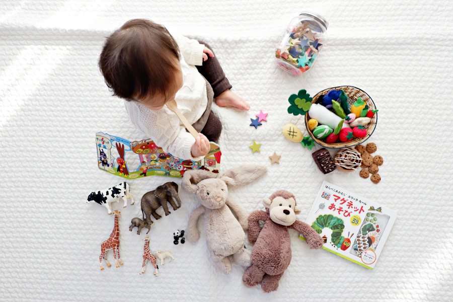
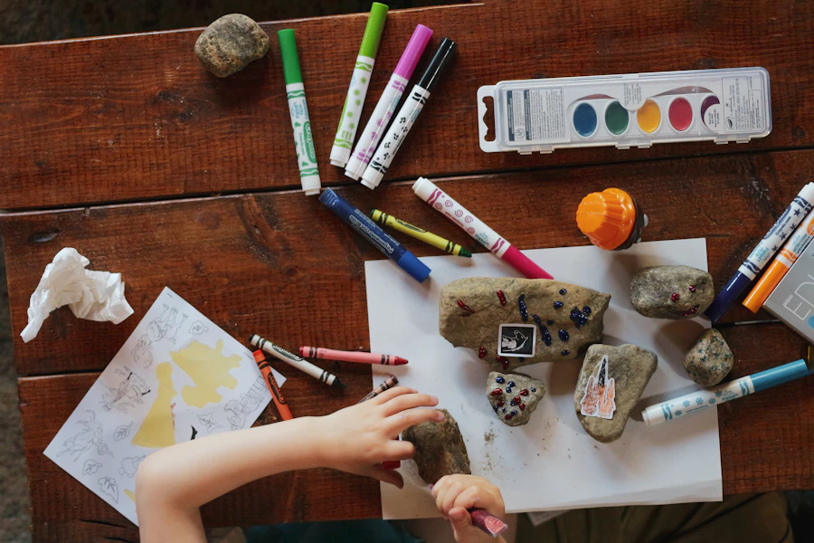

Consulta Pediátrica General
Control del niño sano, valoración del crecimiento y desarrollo, vacunación y prevención de enfermedades para familias en Bogotá, Salitre y Kennedy.
Consulta pediátrica presencial en Bogotá, atención domiciliaria en Salitre y Kennedy, y consulta virtual para familias en toda Colombia. Acompañamiento integral del crecimiento, sueño, lactancia, alimentación complementaria y neurodesarrollo infantil.
Dra. Jazmín Prada
Médica Pediatra
Universidad de Buenos Aires
Acompañamiento médico pediátrico en Bogotá, Salitre y Kennedy, con enfoque en crianza respetuosa, evidencia científica y teleconsulta pediátrica para toda Colombia.
Control del niño sano, valoración del crecimiento y desarrollo, vacunación y prevención de enfermedades para familias en Bogotá, Salitre y Kennedy.
Asesoría integral en lactancia: posición, agarre, producción y dificultades comunes, disponible en Bogotá, Salitre, Kennedy y por consulta virtual para Colombia.

Construir una rutina de sueño saludable mediante estrategias respetuosas. Atención de sueño infantil en Bogotá y orientación virtual para toda Colombia.
Introducción segura de alimentos, BLW y método tradicional. Acompañamiento en alimentación complementaria para bebés en Bogotá y teleconsulta Colombia.
Si sientes que "tu hijo no come", analizamos la situación para encontrar soluciones integrales basadas en ciencia y amor.
Guía profesional para abrazar la llegada de tu bebé. Confianza en cuidados básicos y preparación emocional para esta nueva etapa.

Evaluación de hitos del desarrollo motor, cognitivo, del lenguaje y socio-emocional en Bogotá, Salitre, Kennedy y por consulta virtual.
Apoyo pediátrico especializado sin salir de casa para toda Colombia. Ideal para resolver dudas, segunda opinión y seguimientos a distancia.
Orientación médica oportuna ante fiebre, infecciones, dificultad respiratoria y otras situaciones que requieren atención inmediata.
Soy la Dra. Jazmín Prada, médica pediatra en Bogotá con más de 7 años de experiencia dedicada al cuidado integral de la salud infantil. Mi formación académica en la UBA (Argentina) y mi rol como miembro activo de la Sociedad Colombiana de Pediatría (SCP) y la Sociedad Argentina de Pediatría (SAP) me permiten ofrecer un acompañamiento basado en las evidencias científicas más actualizadas.
Entiendo profundamente los desafíos de la crianza y mi propósito es brindarte herramientas desde la ciencia, la calidez y el amor para que tu familia crezca con bienestar en Bogotá, Salitre, Kennedy o desde cualquier ciudad de Colombia mediante consulta virtual. Cada familia merece un pediatra que escuche, oriente y acompañe con empatía en este viaje transformador.
Dra. Jazmín Prada
Pediatra · UBA
Consulta en consultorio en Bogotá. Examen físico completo, vacunación y seguimiento personalizado.
BogotáAtención en la comodidad de tu hogar. Ideal para recién nacidos, bebés pequeños y familias que prefieren su espacio.
Salitre & KennedyTeleconsulta por videollamada desde cualquier ciudad de Colombia. Seguimiento, orientación y segunda opinión.
Toda ColombiaHistorias reales de familias que han confiado en el acompañamiento de la Dra. Jazmín Prada.
"La Dra. Jazmín fue clave en mi lactancia. Tenía mucho dolor y ella con paciencia me enseñó las posiciones correctas. Hoy mi bebé de 8 meses está feliz y bien alimentado. La recomiendo muchísimo."
María L.
Mamá de Emma · Bogotá
"Vivo en Cali y la consulta virtual con la Dra. Jazmín fue increíble. Mi hijo tenía cólicos y ella me orientó con tanto amor. Ahora duerme mejor y yo me siento mucho más tranquila."
Carolina R.
Mamá de Santiago · Cali
"La Dra. Jazmín vino a casa cuando nació mi bebé. Me sentía perdida y ella me explicó todo con paciencia. El follow-up que ha hecho del crecimiento de mi hija es excelente, ¡muy profesional!"
Daniela M.
Mamá de Lucía · Salitre, Bogotá
"Mi hijo no comía nada y la hora del almuerzo era un drama. La Dra. Jazmín nos ayudó a entender qué estaba pasando. Ahora mi pequeño come de todo y ¡la comida es tiempo en familia!"
Andrés P.
Papá de Lucas · Kennedy, Bogotá
"Mi hija tiene 3 años y desde recién nacida la atiende la Dra. Jazmín. Es cálida, actualizada en pediatría y realmente se nota que le importa cada familia. Es nuestro pediatra de confianza."
Valentina G.
Mamá de Sofia · Bogotá
"Me aterrada antes de ser mamá. La Dra. Jazmín hizo la consulta de preparación y me cambió la vida. Me explicó todo sin tecnicismos, ¡fue como tener una amiga pediatra!"
Sofía T.
Mamá de Mateo · Bogotá
Escríbenos por WhatsApp y coordinamos consulta pediátrica en Bogotá, atención domiciliaria en Salitre y Kennedy, o consulta virtual para toda Colombia. Atención cálida, profesional y basada en evidencia.
Agendar Consulta por WhatsApp